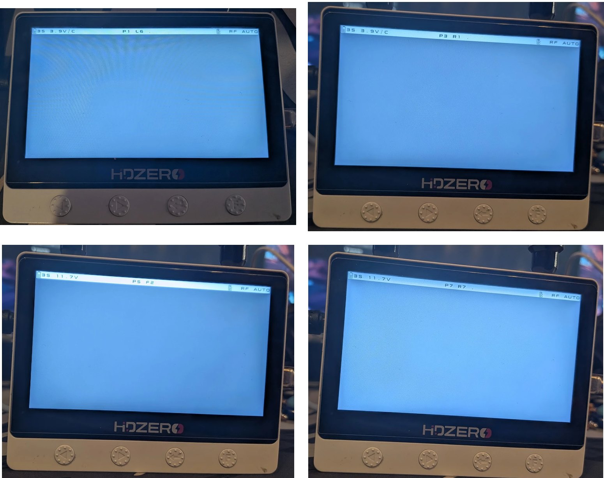
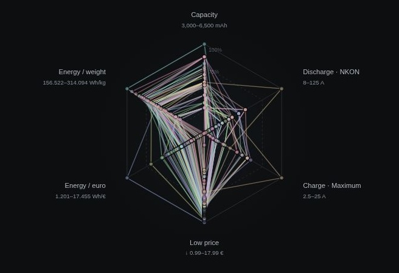
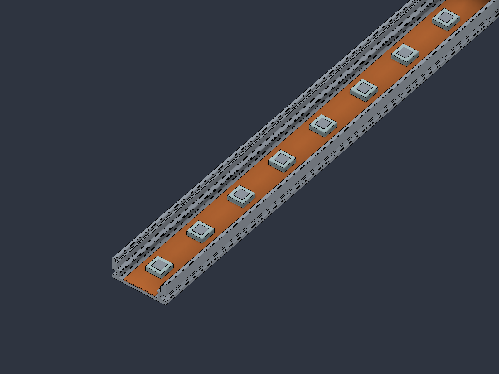
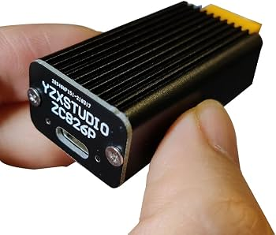
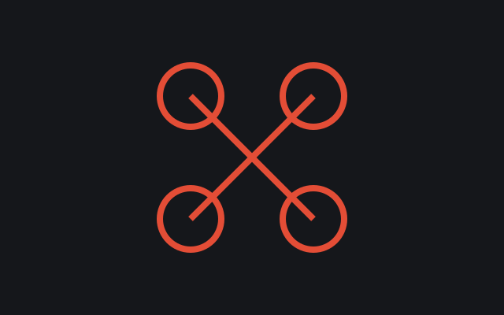
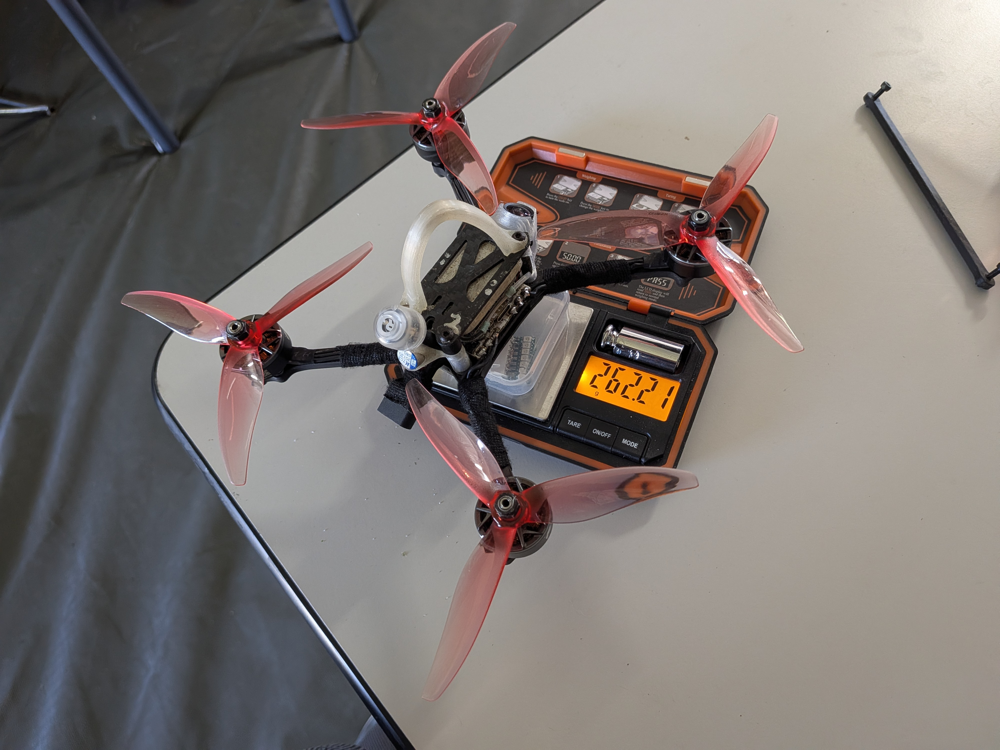
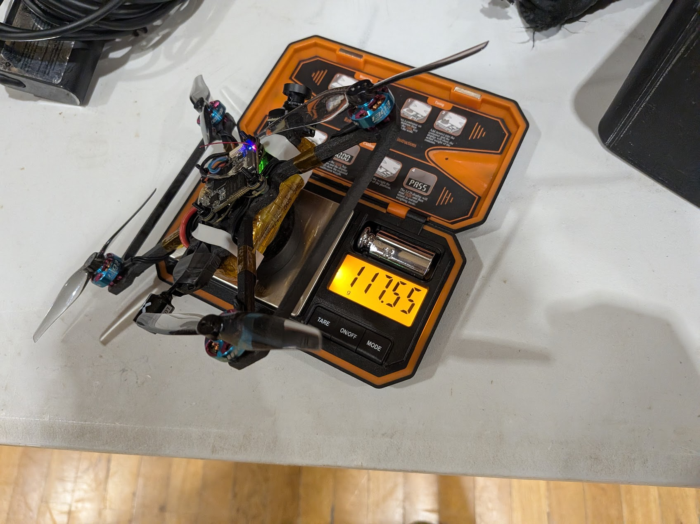
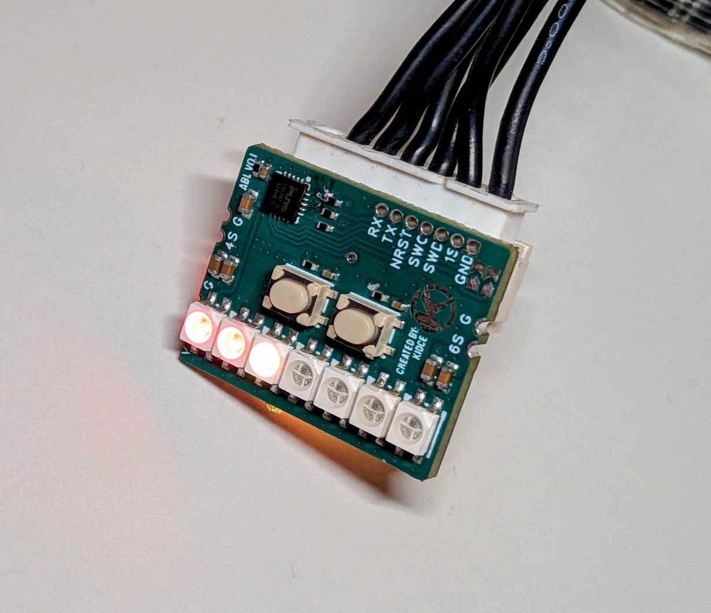

All Articles¶
Projects, builds, wiki notes, repairs and stories from the FPV workbench. Newest first.

HDZero Monitor Favorites
Unofficial HDZero Monitor firmware adding eight race-channel favorites, matching scan coverage and a shorter scan trigger.
Read article →
NKON Cell Selector
Compare 21700 cells with quantity-aware prices, manufacturer data and a mobile radar chart.
Read article →
Tinywhoop LED Gate
Three modular LED-gate concepts, from tested U profiles to a V-profile study and a planned 15 x 15 x 1 mm square-tube frame.
Read article →
IP2368 USB-C PD module appears dead after reconnecting
A 10 kΩ bleed resistor discharges the input capacitors of an IP2368 USB-C PD module that fails to restart after reconnecting.
Read article →
KAACK Cloud Build
KAACK Cloud Build is an independent browser-based firmware builder for KAACK Community and official Betaflight release lines.
Read article →KidCe Configurator
KidCe Configurator is an independent, compatibility-focused browser build based on the Betaflight Configurator / Betaflight App 2025.12.2 source line.
Read article →RatesManager
RatesManager is an EdgeTX tool for managing Betaflight rate profiles directly from a radio.
Read article →Flashforge Creator 5
Hardware, firmware, modification and recovery documentation for the Flashforge Creator 5 and Creator 5 Pro. Most physical findings come from one Creator 5 Pro; model and firmware compatibility are stated on the individual pages.
Read article →Open Firmware Migration
This note is the staged roadmap for moving the Flashforge Creator 5 Pro toward a debuggable Linux/Klipper/Moonraker/Mainsail stack, based on local evidence and upstream documentation checked on 2026-08-27. It is a feasibility foundation, not a claim that stock-free heaters, motion, printing, MCU updates, or fault handling are already safe.
Read article →Vendor Firmware and Klipper
This note is the canonical static view of the vendor firmware and Klipper surface for the Flashforge Creator 5 Pro, based on the local 1.9.8 extraction inspected on 2026-08-27. It identifies what is visible in files and binaries, but it does not claim that any component can be removed safely on a physical printer.
Read article →Camera and Remote Screen
This note owns camera and remote-screen information for the Flashforge Creator 5 project, consolidated on 2026-08-27. It combines a community 720p streamer recipe with the separate Creator 5 Pro remote-screen repository report. The camera and touch paths are not claimed as validated on the target printer during this refactor.
Read article →Entware Moonraker and Mainsail Updates
This note owns the Entware, Moonraker-update, and Mainsail-update material for the Flashforge Creator 5 project, consolidated on 2026-08-27. These procedures are historical community material and source snapshots, not an approved current installer. The supported baseline remains the guarded path in Modding Baseline - Root Loop and Mainsail.
Read article →Heat and Fan Routing
This note owns the community heat/fan routing modification for the Flashforge Creator 5 Pro, consolidated on 2026-08-27. The goal is to decouple the cooling fan from the auxiliary chamber recirculation fan while the chamber heater is active. The source macro is preserved as a referenced attachment, not promoted to a safety-approved configuration.
Read article →Modding Baseline — Root Loop and Mainsail
This note is the canonical baseline for the community root, loop-launcher, and Mainsail path on Flashforge Creator 5 family printers, consolidated on 2026-08-27. It separates the repository's current entry point from the older Discord procedure and does not reproduce the shared root credential. Compatibility and physical success remain device- and firmware-specific.
Read article →Optional Mod Matrix
This note is the feature index for optional Flashforge Creator 5 and Creator 5 Pro modifications, consolidated on 2026-08-27. It is a routing page rather than a second installation manual. Each feature owns its detailed status in a linked note, and repository labels are not treated as physical validation.
Read article →Print Workflow Adaptive Mesh and OrcaSlicer
This note owns print-start, layer metadata, adaptive-mesh, and OrcaSlicer routing information for the Flashforge Creator 5 project, consolidated on 2026-08-27. It keeps snippets and repository status in one place so slicer commands are not copied into several guides. The procedures are community-derived unless a separate physical result is recorded.
Read article →SSH Host Key Persistence
This note owns the community SSH host-key persistence procedure for Flashforge Creator 5 printers, consolidated on 2026-08-27. The procedure changes persistent system state after the /etc bind mount is active; it is not part of the minimum loop baseline and must be backed up before use.
Read article →
Device Evidence and Partition Layout
This note is the single source of truth for measured Creator 5 Pro recovery evidence recorded on 2026-08-26 and 2026-08-27. It describes one physically tested unit and separates physical confirmation, static inspection, repository evidence, and inference. Do not apply its geometry or hashes to another printer without a fresh read-only inventory.
Read article →Offline Repair and Validation
This note is the canonical offline repair and read-back workflow for the Flashforge Creator 5 Pro recovery package, consolidated on 2026-08-27. It deliberately stops at a reviewed, case-specific write design and does not provide a generic flash command. The known startup-permission repair was prepared but not written in the recorded evidence.
Read article →Recovery Overview
This note is the canonical recovery decision tree for the Flashforge Creator 5 Pro knowledge base, consolidated on 2026-08-27. It defines the order from physical inspection through read-only acquisition, diagnosis, and any separately reviewed repair. It does not authorize a write and does not generalize one board's measurements to other printers.
Read article →Temporary ADB Access
This note documents the temporary, owner-initiated root ADB maintenance path over J29 after a normal Creator 5 Pro Linux boot, confirmed on 2026-08-27. It is not a BootROM recovery path and must not be made persistent by default because the tested adbd exposed an unauthenticated root shell to the physically connected host.
Read article →USBCloner Read-only Acquisition
This note is the canonical no-write BootROM and USBCloner acquisition workflow for the Flashforge Creator 5 Pro evidence package, consolidated on 2026-08-27. It stops at read-only acquisition and validation; it contains no active write profile. Device-specific constants are owned by Device Evidence and Partition Layout.
Read article →Capacitor for FPV Racing
A good capacitor is still an important part of a reliable 5-inch FPV racing quad. If motors become unusually hot, the video system shows noise, the flight controller resets, or the quad suddenly feels inconsistent, a damaged, missing, or undersized ESC capacitor is worth checking. It is not a cure-all, but replacing it with a good low-ESR hybrid capacitor often helps.
Read article →Betaflight RX Monitor
Betaflight RX Monitor is a read-only browser tool for diagnosing receiver and USB connection problems on a Betaflight flight controller. It connects directly through Web Serial and provides a focused dashboard with visual status information and configurable audio alerts.
Read article →Stock and Target Architecture
This architecture note separates the stock Creator 5 Pro control graph from the proposed staged open stack, based on local firmware evidence and repository documentation checked on 2026-08-27. The target architecture is a design direction, not proof that a printer can already operate safely without the vendor binary.
Read article →FPV Gate Padding: Current Experience
This combination currently offers the best balance of:
Read article →
2026 Racing Setup
My main race quad is built for a direct, consistent feel and the low-latency HDZero video system.
Read article →Budget Build
An affordable 5-inch FPV build focused on solid components, durability and a good flight feel. Choose the video system that best fits your budget and existing equipment.
Read article →
3.5" 1S Endurance Drone
An experimental 3.5-inch drone optimized for long flight times on a single-cell battery. Its lightweight frame is 3D-printed from PPA-CF.
Read article →
Addressable Balancer LEDs
Addressable Balancer LED is a compact PY32F002B-based electronics and firmware project for FPV lighting and battery-status indication. It is more than a simple LED strip: the board combines mirrored addressable lighting, battery monitoring, selectable color profiles, and low-power operating modes in a small FPV-oriented controller.
Read article →A new home for my FPV notes
The small FPV wiki is becoming a personal website. This is where I will share longer stories, race reports and build logs, while technical notes keep their dedicated place in the wiki.
Read article →